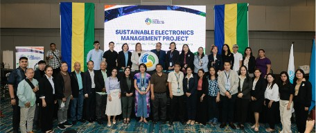
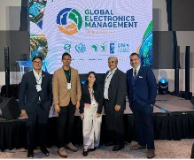
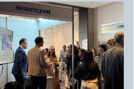
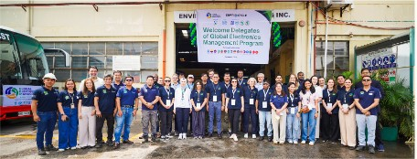
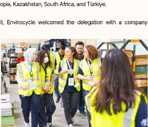

From the Philippines to the Global Stage: Envirocycle’s GEM Milestones
September and October marked an exciting period for Envirocycle Philippines, Inc., as the company participated in three major activities under the Global Electronics Management (GEM) Program, funded by the Global Environment Facility (GEF) and led by the United Nations Industrial Development Organization (UNIDO).
From participating in the Philippine national project launch to engaging with international organizations and welcoming delegates to our facility, these events provided opportunities to showcase Envirocycle’s experience in responsible electronics management.
For the HMR Group, these milestones reflect the value of our collective experience in asset recovery, responsible recycling, and extending the useful life of resources.
September 30: Supporting Sustainable Electronics Management in the Philippines
Park Inn by Radisson, Quezon City

Envirocycle participated in the official launch of the Sustainable Electronics Management in the Philippines project, which brought together government agencies, industry representatives, and sustainability stakeholders.
The initiative aims to strengthen circular electronics management in the country by promoting repair, refurbishment, responsible recycling, and resource recovery.
During the event, Envirocycle delivered a message of support, reaffirming its commitment to responsible electronics management and highlighting its experience in recycling, asset recovery, and sustainability solutions.
A significant milestone was Envirocycle’s selection as an electronics recycling partner for the Philippine GEM initiative, recognizing the importance of regulatory compliance, industry certifications, and practical operational experience.
October 7: Connecting with the Global Electronics Community
Seda Vertis North, Quezon City

The following week, Envirocycle participated in the GEM Global Program Launch, joining international organizations, government representatives, technical experts, and industry partners working toward more sustainable electronics management.
The program spans 16 countries and encourages a shift toward managing electronics throughout their entire lifecycle, rather than focusing solely on disposal.
Envirocycle also participated in the exhibition, providing an opportunity to introduce its services and share how electronics recycling, refurbishment, and resource recovery can contribute to broader circular economy objectives.
The event strengthened Envirocycle’s engagement with international stakeholders and provided valuable opportunities for knowledge exchange.

October 8: Welcoming International Delegates to Our Facility
Envirocycle and HMR Facility, Canlubang, Calamba, Laguna

The GEM activities continued with a visit from 23 international delegates and coordination representatives to the Envirocycle and HMR facility.
The delegation included representatives from UNIDO, GEF, UNEP, and ITU, alongside electronics industry partners and government representatives from Cambodia, Ethiopia, Kazakhstan, South Africa, and Türkiye.
Selected as a recycling partner for the facility visit, Envirocycle welcomed the delegation with a company overview, safety briefing, and guided facility tours.
The visit provided an opportunity to demonstrate responsible electronics recycling operations and exchange perspectives on resource recovery, product life extension, and circular economy practices.
It was also a proud moment for our teams, whose preparation, coordination, and dedication helped make the visit possible.

A Milestone Worth Sharing Across the HMR Group
These three events represent more than participation in an international initiative. They highlight the importance of experience, collaboration, and responsible business practices in building a more sustainable future.
Envirocycle’s involvement in the GEM Program also reflects the broader HMR Group’s commitment to finding value in resources, extending asset lifecycles, and supporting responsible recovery solutions.
To everyone involved in making these events successful, thank you!
From our operations and technical teams to those who handled event preparation, coordination, and facility arrangements, your contributions helped represent our organization to both local and international stakeholders.
As we continue to grow, we look forward to sharing more achievements, initiatives, and stories from across the HMR Group of Companies.
Together, we continue to move forward.
HMR Group of Companies
For internal circulation only.